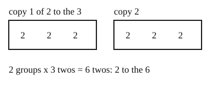

Part of Exponent Rules. Answer in the chat (1: ..., g: c), add sure or guess after any answer, and say done when finished.
Last time: which is (2³)²? You said b) 2⁶, and it is.

A power of a power is copies of copies. (aᵐ)ⁿ is n copies of aᵐ, and each holds m copies of a, so there are m x n copies in all (notes 3):
(aᵐ)ⁿ = aᵐⁿ
Worked example: (3²)⁴.
Q1. Write (5²)³ as one power.
5^6
Right: three copies of two 5s, 3 x 2 = 6 (notes 3).
Q2. Write (x⁴)² as one power.
x^8 (sure)
Right: two copies of four x's, 2 x 4 = 8 (notes 3).
Q3. In your own words: why is (a²)³ equal to a⁶ and not a⁵?
it is three copies of a^2 multiplied, so 2 + 2 + 2 = 6 a's. You only get 5 when you multiply a^2 by a^3
Right: three copies of two a's is 6, while a² × a³ is a different sum (notes 2, 3).
You can now raise a power to a power.
Going down from 2³ = 8 to 2² = 4 to 2¹ = 2, what is 2⁰?
a (sure)